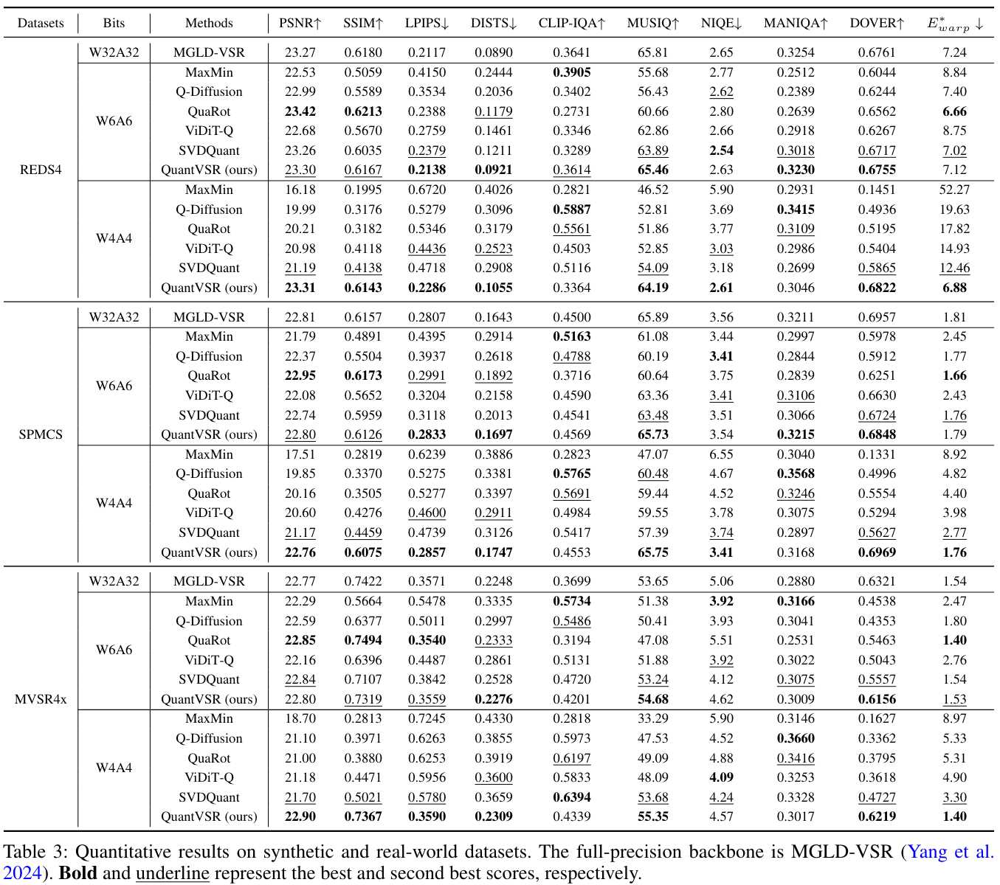
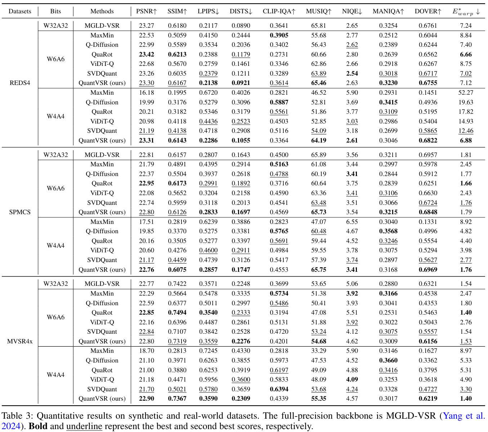
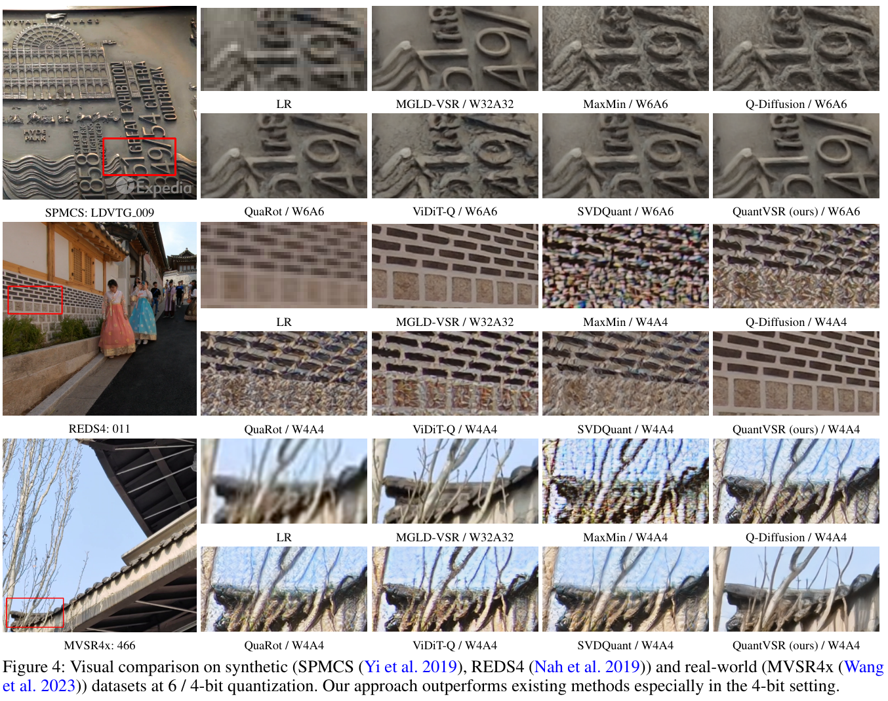

- Results on REDS4, SPMCS, and MVSR4x. (Tab. 3 of the main paper)

QuantVSR is a low-bit quantized model for real-world video super-resolution.
Diffusion models have shown superior performance in real-world video super-resolution (VSR). However, the slow processing speeds and heavy resource consumption of diffusion models hinder their practical application and deployment. Quantization offers a potential solution for compressing the VSR model. Nevertheless, quantizing VSR models is challenging due to their temporal characteristics and high fidelity requirements. To address these issues, we propose QuantVSR, a low-bit quantization model for real-world VSR. We propose a spatio-temporal complexity aware (STCA) mechanism, where we first utilize the calibration dataset to measure both spatial and temporal complexities for each layer. Based on these statistics, we allocate layer-specific ranks to the low-rank full-precision (FP) auxiliary branch. Subsequently, we jointly refine the FP and low-bit branches to achieve simultaneous optimization. In addition, we propose a learnable bias alignment (LBA) module to reduce the biased quantization errors. Extensive experiments on synthetic and real-world datasets demonstrate that our method obtains comparable performance with the FP model and significantly outperforms recent leading low-bit quantization methods.
Overview of our QuantVSR. First, we analyze the temporal and spatial complexity distribution of the calibration dataset and leverage these statistics to allocate layer-specific ranks. Next, we jointly refine the two branches in spatio-temporal complexity aware mechanism. Finally, we train the learnable bias alignment module.


@article{chai2025quantvsr,
title = {QuantVSR: Low-Bit Post-Training Quantization for Real-World Video Super-Resolution},
author = {Chai, Bowen and Chen, Zheng and Zhu, Libo and Li, Wenbo and Guo, Yong and Zhang, Yulun},
journal = {arXiv preprint arXiv:2508.04485},
year = {2025}
}